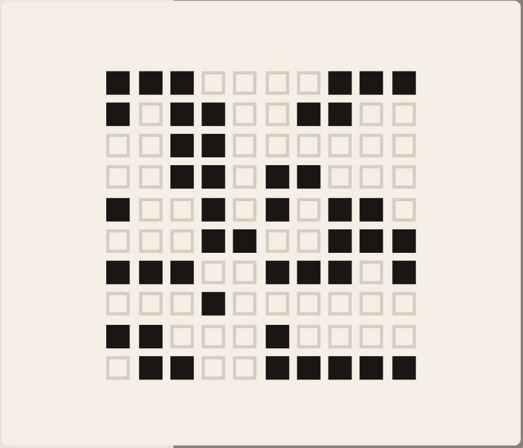
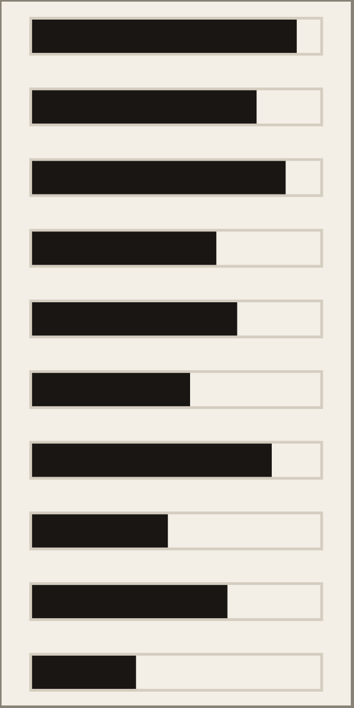
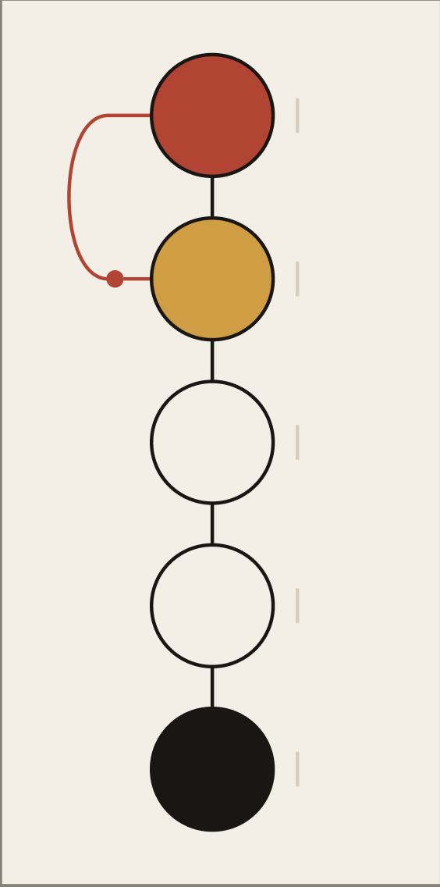
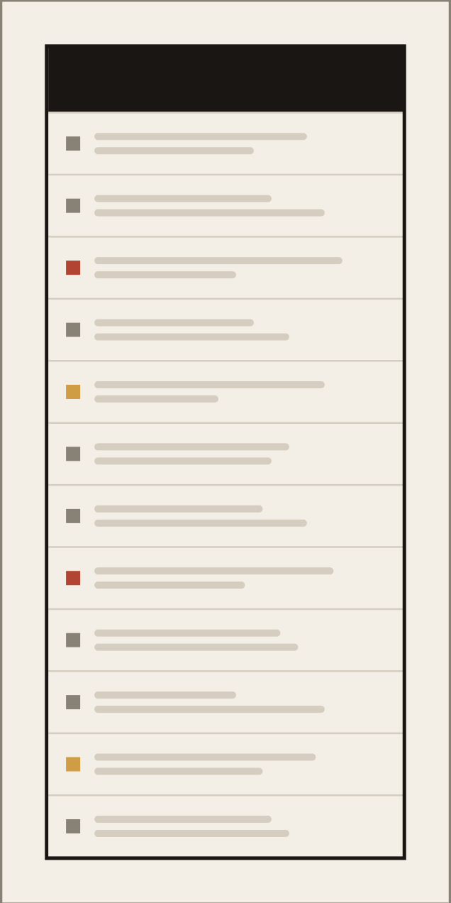

Enterprise / Engineering
Yakabod
Two summers on an engineering team building secure software for government and security clients. This is where I learned what happens to a design decision after it leaves Figma.

Role
Platform
Timeline
Tools
01 / Challenge
Challenge
Software used by government and security teams has an unusually high bar for reliability. Gaps in test coverage and inconsistent documentation made it harder to catch problems before a release went out.

02 / Solution
Solution
Secure enterprise software has an unusually high bar for reliability — a defect that reaches a government client is a different kind of problem than a bug in a consumer app. I worked through regression, acceptance, integration, and feature validation cycles across two summers, and the thing that made the work useful wasn't volume. It was documenting defects clearly enough that any engineer could reproduce them without asking me.
- QA
- Agile
- Documentation
- Test Automation

Test Coverage
500+ tests across four workflow types. Coverage matters less than consistency — running the same ground the same way each release is what catches regressions, and that only works if the process is written down.

Defect Tracking
Every result logged with reproduction steps and browser context. A defect that can't be reproduced gets rediscovered next release, so the documentation was the actual deliverable, not the finding.

Documentation Standards
I contributed to a repeatable structure for regression coverage so the team wasn't relying on whoever happened to remember what was tested last time. It's the part of the work that outlasted my internship.
03 / Impact
Impact
500+
Tests Run
4
Workflow Types
2
Summers Interned
Sitting in sprint planning, code reviews, and standups for two summers showed me where handoffs actually break down, and how much of a design's fate gets decided by constraints nobody wrote down.
What I Learned
Seeing where handoffs break changed how I design. I think about implementation cost while I'm still in Figma now, not after.